Work for sale
79 works, 290 images, newest first · updated 2026-09-30
Some Ruidoso Upper Canyon residents under set/voluntary evacuation / Warmest September 29 on the Dutch record: 28.6°C in Eindhoven, 25.9°C in De Biltawaiting review
Warmest September 29 on the Dutch record: 28.6°C in Eindhoven, 25.9°C in De Bilt / Trinity Downwinders: The Fight That Took 80 Yearsawaiting review
Warmest September 29 on the Dutch record: 28.6°C in Eindhoven, 25.9°C in De Biltawaiting review
Warmest September 29 on the Dutch record: 28.6°C in Eindhoven, 25.9°C in De Bilt / NWS: Flash flood emergency issued in Doña Ana County 'for the imminent failure' of damawaiting review
Trinity Downwinders: The Fight That Took 80 Years / Warmest September 29 on the Dutch record: 28.6°C in Eindhoven, 25.9°C in De Biltawaiting review
Warmest September 29 on the Dutch record: 28.6°C in Eindhoven, 25.9°C in De Biltawaiting review
Warmest September 29 on the Dutch record: 28.6°C in Eindhoven, 25.9°C in De Bilt / Trinity Downwinders: The Fight That Took 80 Yearsawaiting review
Heavy rounds of storms across New Mexico / Trinity Downwinders: The Fight That Took 80 Yearsawaiting review
Trinity Downwinders: The Fight That Took 80 Years / Zoek de verschillen: Vijzelstraat in 1956 en 2026awaiting review
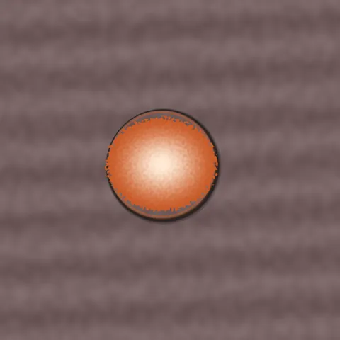
Trinity Downwinders: The Fight That Took 80 Yearsawaiting review

Dutch river cruise stranded as Rhine falls to new record levels / Monsoon moisture brings flooding threats to New Mexicoawaiting review
Dutch river cruise stranded as Rhine falls to new record levels / Kamiel (62) heeft een enorme loft in de Jordaan met bioscoop en zitkuil: ‘Absurde luxe dat ik een kamer heb om films in te kijken’ / Monsoon moisture brings flooding threats to New Mexicoawaiting review
Nieuwe jaguar Avatar moet nog even aarden in Artis: ‘Hij gromde en grauwde al naar me, zo word je nou eenmaal begroet door een jaguar’ / Dutch river cruise stranded as Rhine falls to new record levelsawaiting review
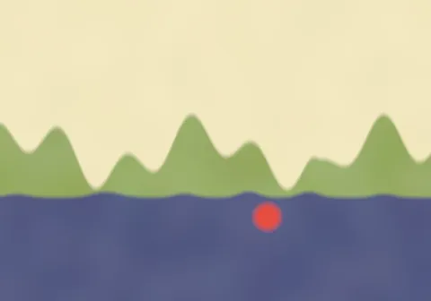
Thermometer to rise from 22°C today to 26°C tomorrow before cooling off from Thursday / Dutch river cruise stranded as Rhine falls to new record levelsawaiting review
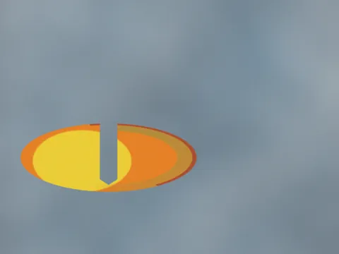
Late September heat might break Dutch records as highs set to reach 28°C midweeknot converging
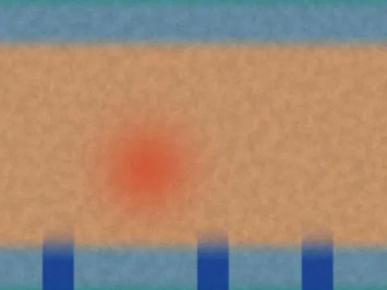
Late September heat might break Dutch records as highs set to reach 28°C midweeknot converging
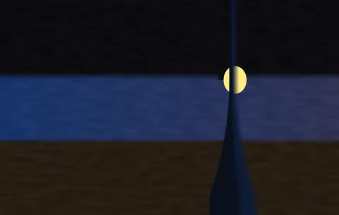
Pontschipper Ellen (37) zag dodelijke schietpartij op NDSM-kade gebeuren en maakte rechtsomkeert: ‘Ik heb bukkend gestuurd’not converging
Hospitals toss hundreds of uniforms weekly after pens and markers end up in the washnot converging
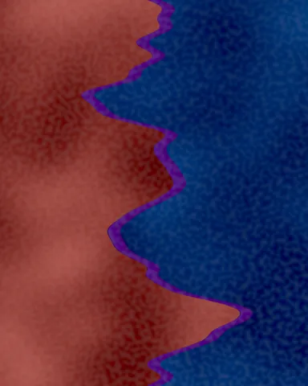
VIDEO: Escaped horse leads police on chase in Santa Feaccepted
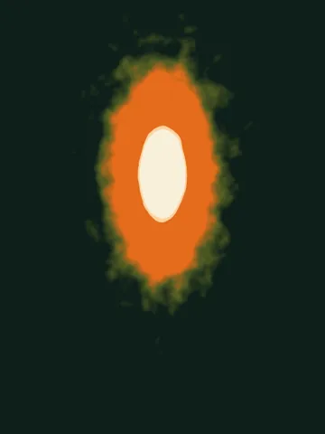
Security camera footage shows man throwing Molotov Cocktail at neighbor's house in Albuquerquenot converging
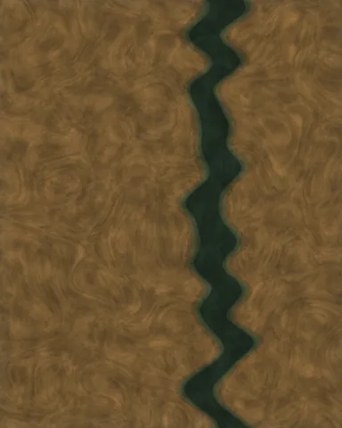
Same Earthrejected
Heath with Crossingnot converging
Veinnot converging
Canary against oxideaccepted
Refusal to Flattenincomplete
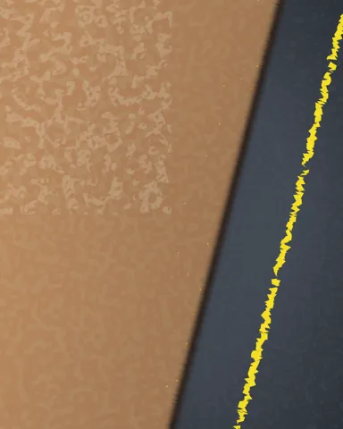
The Veinnot converging
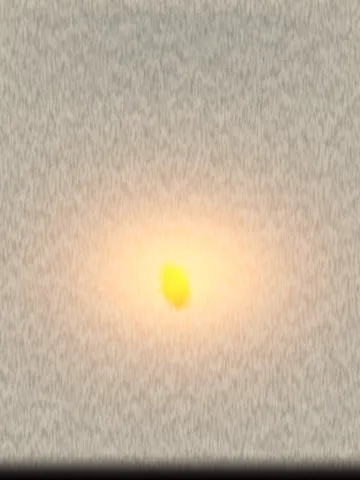
The Thinningnot converging
Effigy at Dusk — After the Burning Pastnot converging
After Zozobra, the Sky Deepensnot converging
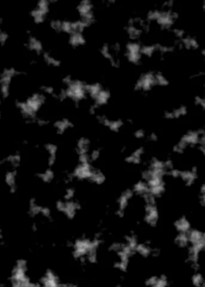
Two Incandescences, Late Septembernot converging
Heat Registernot converging
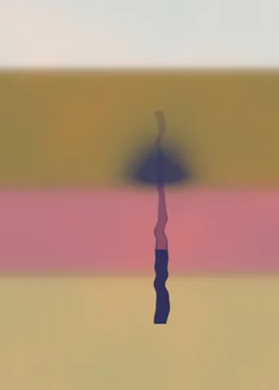
Stratigraphy (De Pijp, After 1923)not converging
Earth and Charrejected
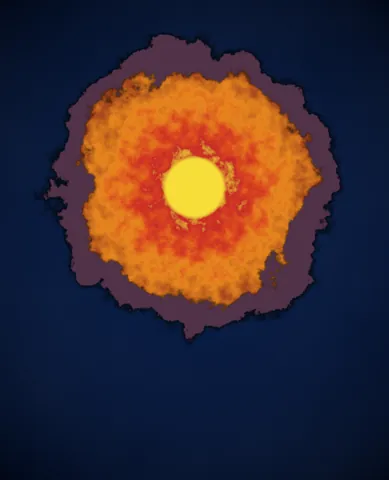
Held Sun, Cold Vesselnot converging
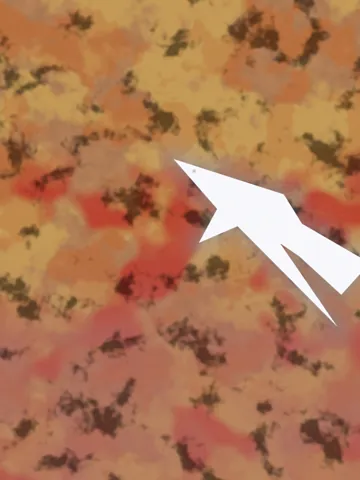
The Breachincomplete
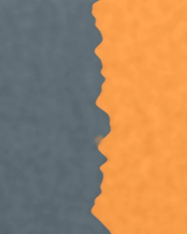
Sodium and Concretenot converging
Confined Mauveaccepted
Two Lights, Ungroundedaccepted
Twin Columns, Near-Nightnot converging
Five Hundred Winters on the Binnenhofnot converging
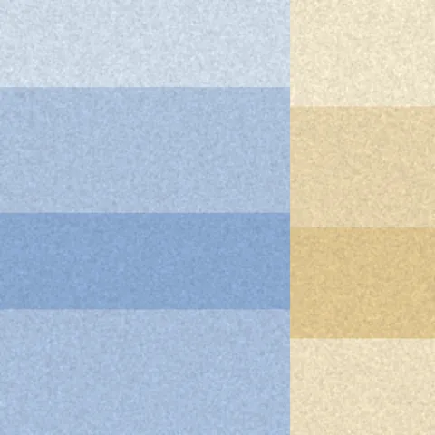
The Seam Itselfaccepted
The Third Warmthnot converging
Pall (Sittard)not converging
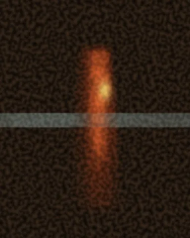
Spirit Flash — Van Kleef, 1776not converging
Sidewalk Climate (Pressure Study)not converging
Adjacent, Wetincomplete
no image
Untitled (work_b3c0a734e2)incomplete
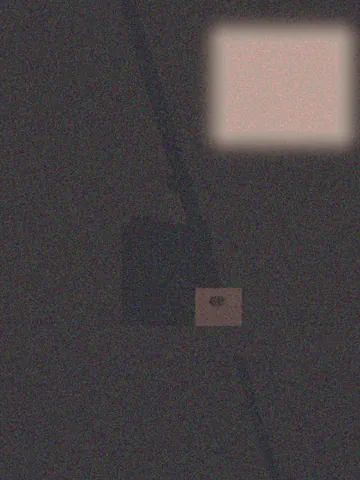
The Pigment Poolnot converging
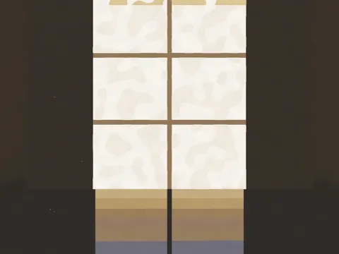
Strandgade, Stippledrejected
Where the Warmth Stopsrejected
Diffuse Aperture, Laterejected
The Hour the Light Holdsrejected
Naples Groundrejected
no image
Aperture, Withdrawnrejected
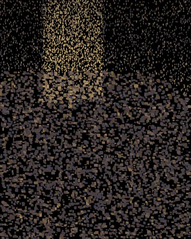
Quarter to Fiveincomplete
no image
Pigment Chamber, Late Hourrejected
no image
Untitled (work_43171ffe67)incomplete
no image
Stratigraphic Lightrejected
no image
Aperture, Late Afternoonrejected
no image
The Aperture's Ledgerrejected
no image
Held Lightrejected
no image
Late Interior — October 4:17 PMrejected
The Quiet Apertureincomplete
no image
SIGTERM probeincomplete
Glacisincomplete
Strandgade, Lateincomplete
After the Light Has Crossedincomplete
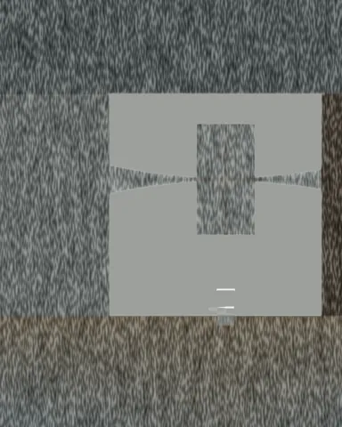
Where the Light Landsrejected
Half-Drawn Interior, Lateincomplete
Late, Looking Upincomplete
Before the Room Goes Blueincomplete
Spillincomplete
The Rake of Late Lightincomplete
no image
Untitled (work_3011eb4f6e)incomplete
no image
Pigment and the L-Shaped Lightincomplete
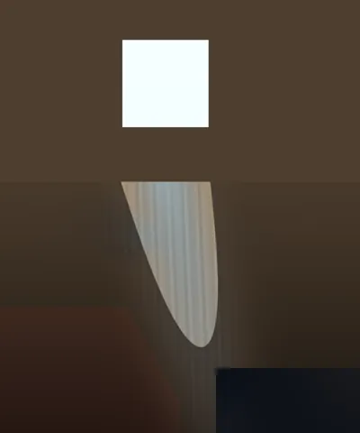
Hour of the Spillrejected
no image
Afternoon in Six Pigmentsincomplete
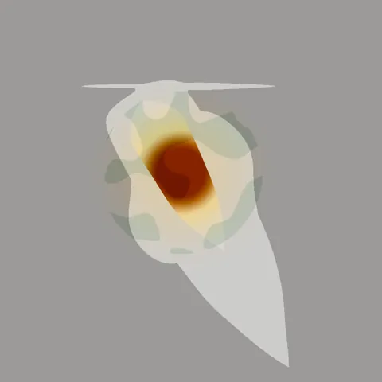
Incidence, Laterejected
Untitled (Weft Drift)rejected